У меня был TÖMER. Год подготовки перед университетом. Анталья.
Первая неделя. Ходжа пишет на доске:
Ben okula gidiyorum.
Говорю, hocam, а почему глагол в конце. Она говорит, а где ему быть. Говорю, в середине. Как у людей.
1 / 3
ТА
timur · alternaАнталья
Она посмотрела на меня, как смотрят на человека, который спросил, почему море мокрое.
Ничего не ответила. Пошли дальше.
В субботу я пошёл на рынок. За помидорами. Подготовился. Фразу собрал сам. По-русски.
2 / 3
ТА
timur · alternaАнталья
Говорю продавцу:
Ben istiyorum… bir kilo domates.
Продавец начал взвешивать на слове istiyorum. Дальше не слушал. Глагол прозвучал. Мысль закончилась.
Ушёл с двумя кило. Ели всей общагой.
3 / 3
Правильно было Bir kilo domates istiyorum. Сначала что. Потом хочу. Ниже разберём, почему так. Чтобы у тебя был ровно тот килограмм, который ты просил.
Точка А → Точка Б
Как говорит русский мозг и как говорит турок
Точка А это перевод слово в слово. Его поймут. Но посмотрят как на того парня с помидорами. Нажми на карточку и послушай, как надо.
В конце тест на 6 вопросов. Не ради оценки. Ради того, чтобы на рынке ушёл с одним кило.
01 · Основа
Кто. Что. Делает.
Русский говорит Я пью чай. Subject, Verb, Object. SVO. Турецкий говорит Ben çay içiyorum. Я чай пью. Subject, Object, Verb. SOV. Всё.
Sкто
Oчто
Vглагол
SOV
Самый частый порядок слов в мире. Больше языков говорят как турки, чем как русские.
Мен шай ішемін
Казахский, узбекский, кыргызский тоже SOV. Знаешь один из них? У тебя чит-код. Покажу ниже.
…weil ich Tee trinke
Учил немецкий? Помнишь придаточное, где глагол уезжает в конец? В турецком так всегда.
02 · Поезд
Глагол это локомотив. Только он толкает сзади
Добавляй вагоны. Сколько ни добавляй, локомотив остаётся последним. Русский глагол болтается где-то в середине. Турецкий не двигается.
Türkçe2 вагона
КтоКогдаКакГде / кудаЧтоГлагол
Это не закон. Вагоны в середине можно двигать. Последний вагон двигать нельзя.
Собери поезд1 / 4
03 · Сцена
Место перед глаголом это сцена
Что стоит прямо перед глаголом, на то и светит прожектор. В русском мы делаем это голосом. В турецком порядком. Нажми на слово, и оно выйдет на сцену.
Alidünkitabıaldı
жёлтое слово стоит на сцене
Отсюда же правило для вопросов. Вопросительное слово садится на сцену. Ответ садится туда же. Kitabı kim aldı? Kitabı Ali aldı. Кто купил? Али купил. Слово в слово на том же стуле.
04 · Левое ветвление
Турецкий это русский в зеркале
В русском главное слово стоит первым. Дальше к нему цепляются хвосты. Направо. В турецком главное слово стоит последним. Всё, что его описывает, стоит слева. Это и есть «левое ветвление».
RUглавное слово впереди, хвосты справа
Цвет машины мамы Тимура. Timur'un annesinin arabasının rengi. Тимура мамы машины цвет. Слова те же. Порядок ровно наоборот.
Матрёшка растёт влево
Главное слово стоит на месте. Новые описания приходят слева. Русскому для этого нужны «который», запятые и вдох. Турецкому не нужны.
← растёт сюдаголова
1 / 4
Лайфхак: длинную турецкую фразу читай с конца. Сначала голова. Потом спрашивай: какая? когда? чья? Каждое слово слева это ответ.
05 · Послелоги
Предлоги переехали назад
В русском «для», «до», «после» стоят перед словом. В турецком после. Поэтому они и называются послелоги. Смотри, как они перепрыгивают.
Зеркало работает везде
Один принцип. Шесть мест, где он вылезает. Выучил один раз, и шесть тем стали понятнее.
Чьё
машина Тимура
Timur'un arabası
Хозяин первым. Вещь последней.
Который
книга, которую я читаю
okuduğum kitap
«Который» превращается в суффикс и встаёт слева. Буквально: «моя-читаемая книга».
Предлог
для тебя
senin için
Послелог после слова. Ты уже видел, как он прыгает.
Потому что
Я остался дома, потому что шёл дождь
Yağmur yağdığı için evde kaldım
Причина идёт первой. Главное предложение в конце. Как глагол.
Вопрос
Ты придёшь?
Gelecek misin?
Частица вопроса mı/mi в хвосте. Никаких «ли» в начале.
Отрицание
я не знаю
bilmiyorum
«Не» сидит внутри глагола. А глагол, как ты помнишь, в конце.
Чит-код
Знаешь казахский? Ты уже знаешь порядок
Я вырос в Шымкенте. В TÖMER казахи сидели спокойно, когда остальные хватались за голову. Смотри почему.
KZМенертеңАлматығабарамынTRBenyarınAlmatı'yagideceğimRUЯзавтрапоедув Алматы
Слово в слово. Даже окончание «куда» на том же месте: -ға и -'ya. Русский единственный выбивается из строя.
06 · Таксист
Глагол в конце. Но таксист не в курсе
Анталья. Сажусь в такси. Таксист говорит:
Gidiyor muyuz abi havalimanına? Едем, брат, в аэропорт?
Глагол в начале. Аэропорт в хвосте. Говорю, abi, у нас в TÖMER глагол стоял в конце.
Hoca taksi sürmüyor. Ходжа такси не водит.
Справедливо.
Это devrik cümle, перевёрнутое предложение. В живой речи турок бросает глагол, а потом добавляет хвостик. На эмоциях. Между делом. В песнях постоянно.
Gidiyorum ben.Я пошёл. (Ну всё, я пошёл.)
Geldi mi Ahmet?Ахмет пришёл?
Çok güzelmiş bu!Классная же штука!
Правило выживания: слушать можно как таксист. Писать и сдавать экзамен как ходжа. Глагол в конец. Хвостики оставь для такси.
Проверка
Шесть вопросов. Один килограмм
1 / 60 верно
Шпаргалка
Сохрани скриншотом
Глагол в конецВсегда. Кроме такси.
Кто → когда → как → где → что → глаголСередину можно двигать. Конец нельзя.
Перед глаголом сценаТуда самое важное. И вопросительное слово.
Описание слева, главное справаTimur'un annesinin arabasının rengi
Послелоги после словаiçin · kadar · sonra · gibi · yüzünden
Придаточное раньше главногоYağmur yağdığı için evde kaldım
Честно. Сколько раз ты уже начинал турецкий с «Merhaba»?
Эта платформа для тебя, если ты…
Переезжаешь в Турцию
Аренда, банк, врач, соседи. Каждый говорит быстро. Ты киваешь и переспрашиваешь у переводчика.
Что изменится:
Лексика по темам: больница, транспорт, гостиница, работа. То, что реально говорят.
Готовишься к экзамену
TÖMER, поступление, документы. Нужен уровень на бумаге. А материалы разбросаны по десяти сайтам.
Что изменится:
32 блока по экзаменам. A1, A2, B1, B2, C1. По каждому отдельно.
Понимаешь, но молчишь
Сериалы на слух понятны. А рот не открывается. Знаешь слова, не знаешь, в каком порядке их ставить.
Что изменится:
128 гайдов как этот. Понимаешь, почему говоришь именно так. Барьер уходит.
Начинал уже несколько раз
Приложение. Ютуб. Учебник. Снова приложение. Каждый раз с нуля и каждый раз «зачем мне это».
Что изменится:
Всё собрано по уровням. Открыл свой и взял. Искать не надо.
Что внутри
Программа Alterna A0 → C1
Блок 1
Грамматика
128гайдов
Разбор как здесь: история, схема, примеры
Без «откройте страницу 42»
От алфавита до придаточных и косвенной речи
Результат:Понимаешь, почему турок сказал именно так. И говоришь так же.
Блок 2
Лексика по темам
131блок
Больница, ресторан, транспорт, гостиница
Не список слов, а то, что реально говорят
С транскрипцией кириллицей
Результат:В аптеке и у врача говоришь сам. Без переводчика в телефоне.
Блок 3
Интерактив
109ресурсов
Слова, тексты, диалоги
Аудирование
Игры на запоминание и тренажёры
Результат:Запоминаешь руками, а не зубрёжкой. Как с поездом выше.
Блок 4
Экзамены
32блока
A1, A2, B1, B2, C1
По каждому уровню отдельно
Результат:Знаешь, что ждёт на экзамене твоего уровня. Идёшь подготовленным.
Блок 5
Турецкий для работы
36гайдов
Для тех, кто ищет работу
И для тех, кто уже пашет
Результат:Рабочие разговоры и переписка без паники.
Блок 6
Материалы по уровням
1716штук
Фильмы, книги, мультики
Подкасты, приложения, ютуб
Разложено по уровням A0–C1
Результат:Открываешь свой уровень и берёшь. Без двух часов поиска.
Без рендеров
Как это выглядит на самом деле
Ниже реальная запись экрана. Тот же подход, что в этом гайде: схема, тренажёр, проверка.
alterna · türkçe
Гайд по грамматике. Чередование согласных: kitap → kitabı. Анимация показывает, где буква звенит.
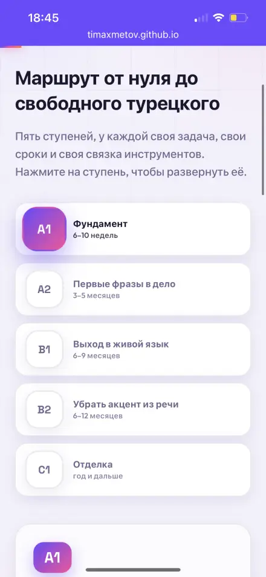
Маршрут A0 → C1
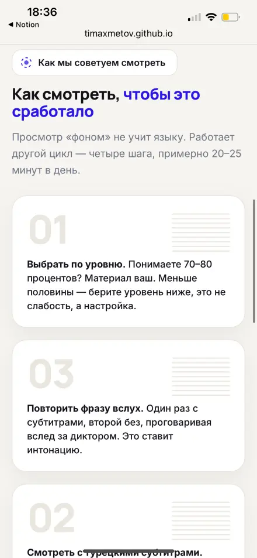
Твой кабинет
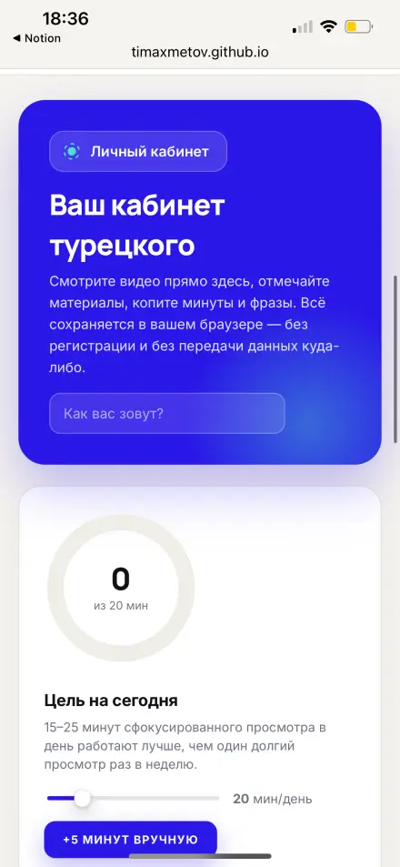
Карта по уровням
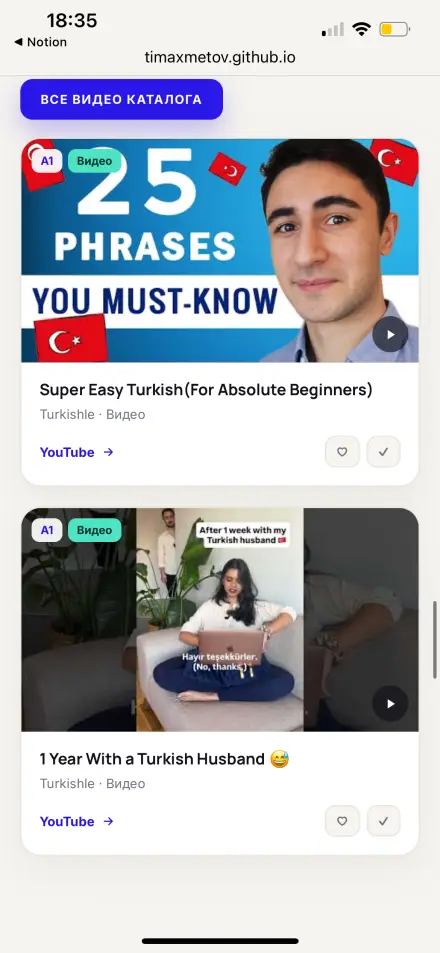
Видео по уровням
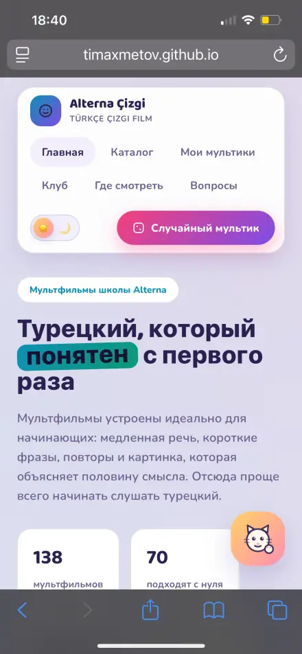
Клуб мультиманов
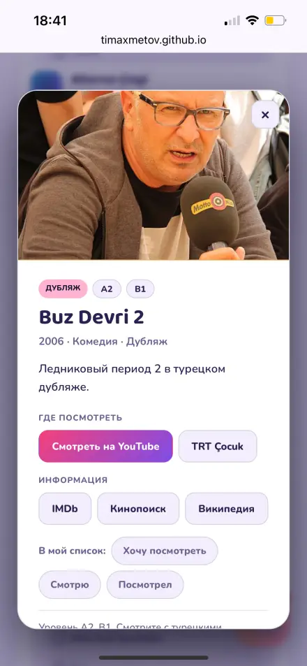
Buz Devri 2 · A2
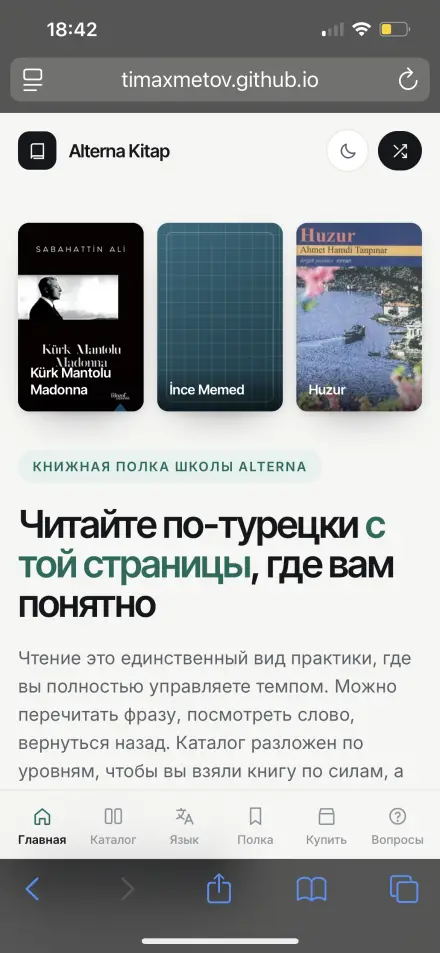
Книжная полка
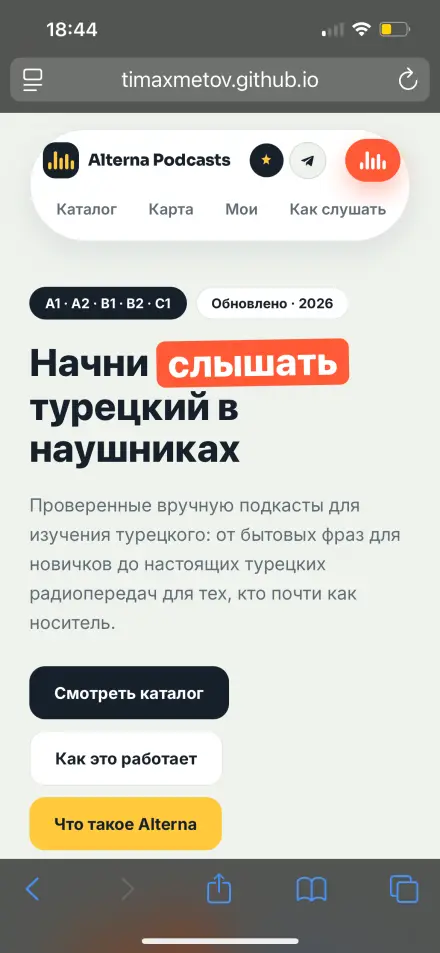
Подкасты
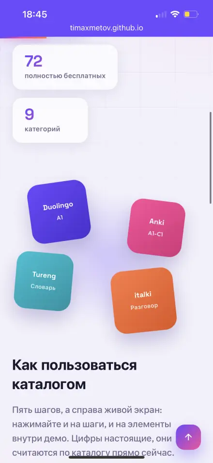
143 приложения
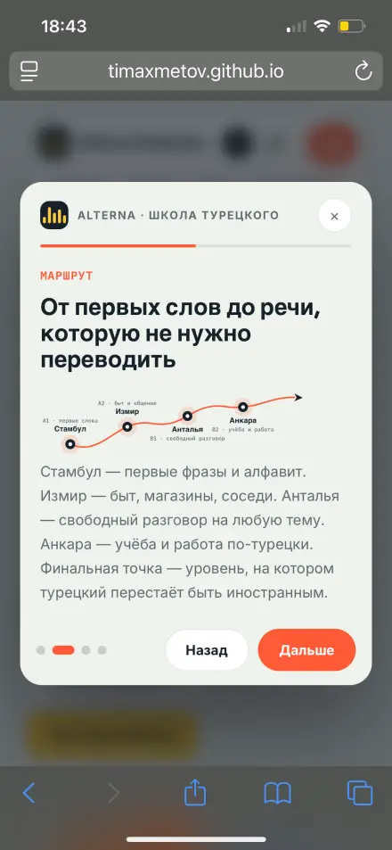
От слов до речи
Уже внутри
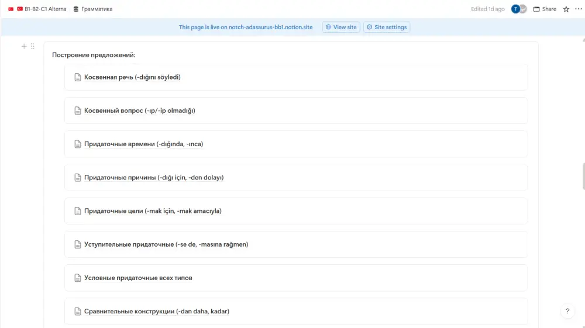
Раздел «Построение предложений». Порядок слов, придаточные, косвенная речь. То, что ты сегодня начал, там продолжается.Лексика с транскрипцией кириллицей. Знакомство, отель, рынок.
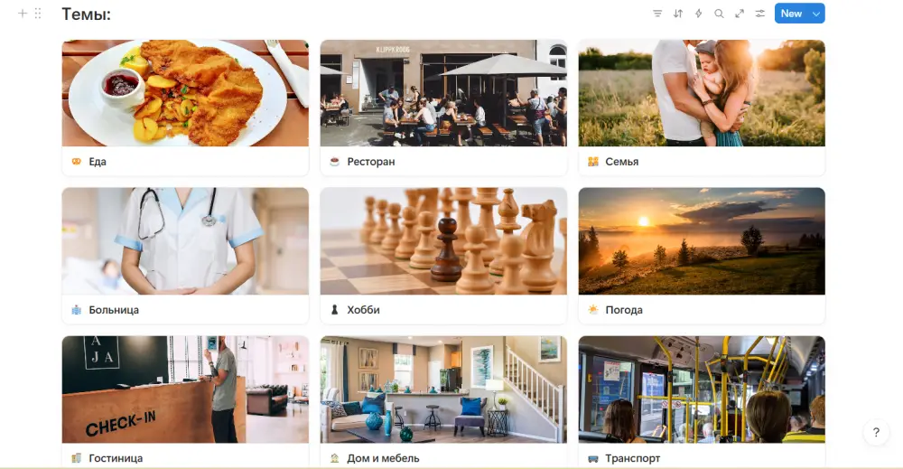
Темы с картинками: еда, ресторан, больница, транспорт.
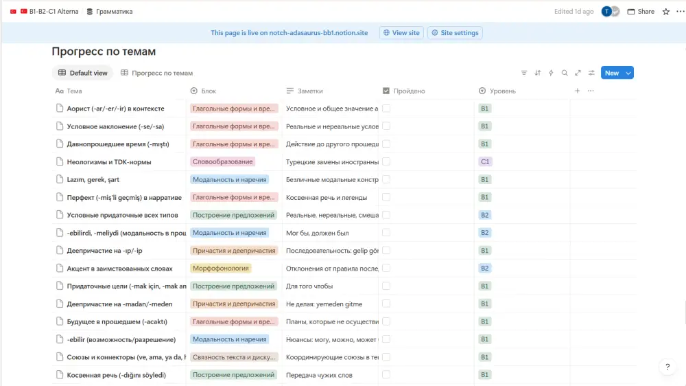
Прогресс по темам. Видно, что пройдено и что дальше.
Отзывы из Telegram
Точка А → Точка Б
Не цифры заработка. Обычные люди, которые учат турецкий. Пишут сами.
Э
Элинаучила турецкий на слух
Точка А:Понимала, но не говорила. Стеснялась
Точка Б:Появилась уверенность, барьер прошёл
У меня есть турецкий на слух, так я его выучила. Понимать понимала, но говорить не говорила. Сейчас разбираю грамматику и уже понимаю, почему я отвечаю именно так. Сразу появилась уверенность и вести диалоги стало легче. Сразу барьер прошёл.
А
Алисаначинала несколько раз
Точка А:Начинала и бросала. «Зачем мне это?»
Точка Б:Каждый день что-то новое
Я несколько раз начинала учить турецкий язык и каждый раз говорила себе, зачем мне это нужно?! Но благодаря вам я каждый день изучаю что-то новое, хотя бы просто читаю. Уроки даны в интересном формате. Всё проходит весело, непринуждённо.
Н
Натальякупила доступ A0 → C1
Точка А:Нужна база, а не отдельные куски
Точка Б:Лексика, грамматика, чтение и речь в одном месте
Создать площадку с уровня A0 до уровня C1 с такой огромнейшей базой для облегчения процесса изучения турецкого языка это что-то!!! Задействованы все составляющие: и лексика, и грамматика, а практическое применение чтения, слушания, разговорной речи и письма.
Д
Дарьязанимается с репетитором
Точка А:Репетитор раз в неделю. Мало
Точка Б:Отрабатывает материалы с репетитором и в жизни
Занимаюсь с репетитором, но в пользу занятости получается раз в неделю. Так что ваши материалы отлично использую в качестве доп материалов. Очень нравится подача через личные истории, это смешно и помогает легче запомнить информацию.
Кто это сделал
ТА
автор Alterna · Анталья
Тимур
Ахметов. Студент университета Акдениз, электротехника
TÖMER C1. Год подготовительного курса перед университетом. Там и случились помидоры.